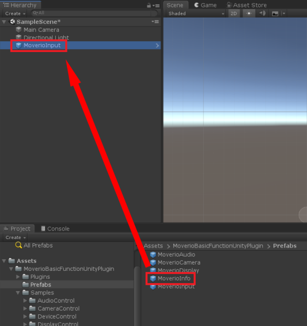

Create a Unity project and import the package
Refer to Create a Unity project for how to create
Drag and drop MoverioInput into the hierarchy window

Create a script

Add using
Open the script created in 3 and describe as using MoverioBasicFunctionUnityPlugin;
using MoverioBasicFunctionUnityPlugin;Call a function
Describe the API you want to use like MoverioInput.GetAccAccuracy
Refer to the following script for the description method of each function
| label | script |
|---|---|
| Accelerometer | AccelerometerController.cs |
| Magnetic field | MagneticFieldController.cs |
| Gyroscope | GyroscopeController.cs |
| Ambient light | LightController.cs |
| Gravity | GravityController.cs |
| Linear accelerometer | LinearAccelerometerController.cs |
| Rotation vector | RotationVectorController.cs |
| Game Rotation vector | GameRotationVectorController.cs |
| Uncalibrated Accelerometer | AccelerometerUncalibratedController.cs |
| Uncalibrated Magnetic field | MagneticFieldUncalibratedController.cs |
| Uncalibrated Gyroscope | GyroscopeUncalibratedController.cs |
Attach script to GameObject